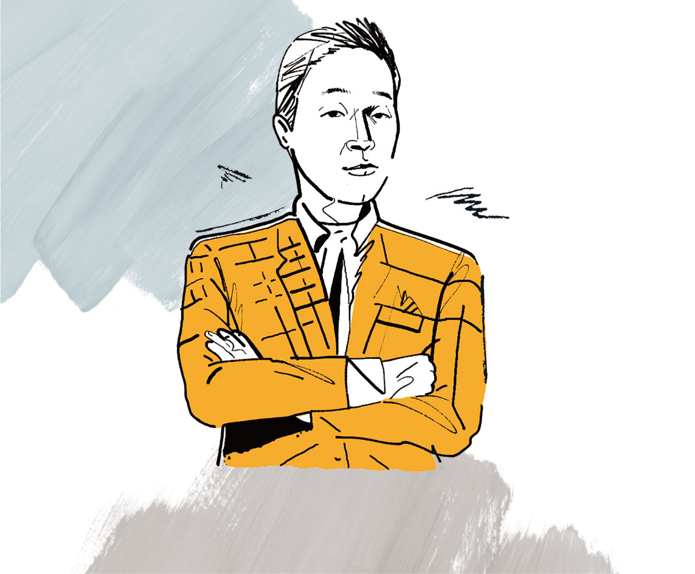
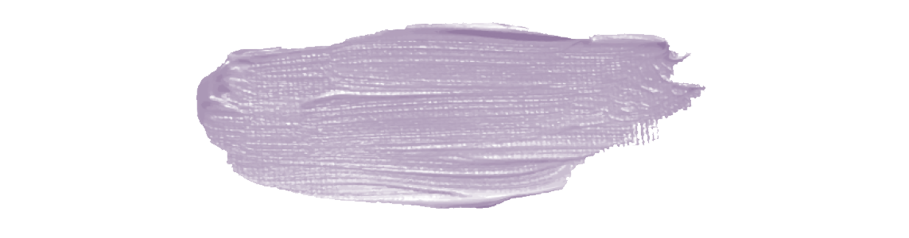
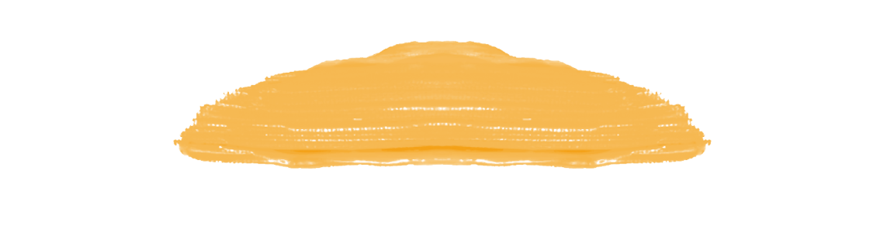

나는 프로다
장문수 님
원익큐브 수지영업1팀2022 봄호 Vol.67

장문수 님
원익큐브 수지영업1팀01. 무엇이든 물어보세요, AI인간
자신이 몸 담고 있는 원익 큐브의 제품에 관한 전문 성은 팀원 모두가 인정한다. AI와 겨뤄도 손색이 없을 정도다. 무엇이든 물어봐도 즉각 대답하고 해결책을 제시해준다. 막힘 없는 대답의 끝이 궁금해진다고. 이 때문에 장문 수 리더도 팀원들에게 프로페셔널 정신을 강조한다.02. 영업의 최적화. 마당발이다
수지 시장에서 마당발로 통하는 장문수 리더는 다양한 네트워크를 구축해 영업에 활용 하고 있다. 덕분에 어려운 경기 상황에서도 수지영업1팀이 실적을 내고 있다. 특히 대 부분의 품목이 수입을 통해 이뤄지는 특성 때문에 외부 환경의 변화가 있을 때마다 대 비해야 한다. 하지만 수지영업1팀에는 그가 있기에 든든하다.03. 진심으로 통하다
자 신의 일을 누구보다 사랑하는 사람이 바로 장문수 리더라고 팀원들은 입을 모은다. 업 무를 임하는 데 있어 진심이 담긴 태도로 일을 하기 때문에 자연스럽게 팀원들에게 그 마음이 전해진다고. 덕분에 팀원들이 장문수 리더의 가장 닮고 싶은 점을 ‘진심 어린 태 도’로 꼽는다.04. 모든 문제의 해결은 대화가 답이다
팀원 내의 문제가 생기거나, 갈 등이 일어날 경우 ‘대화가 모든 것을 해결해준다’고 믿는다. 특히 서로 간의 문제에 대 해 스스로 생각해볼 수 있도록 ‘Why’를 생각한다. ‘왜 그랬을까’, ‘왜 그런 행동과 말투 가 나왔을까?’. 그리고 서로의 속내를 들여다볼 수 있는 대화 시간을 마련해 해결한다.05. 구성원의 장점을 극대화하다
업무에 있어 구성원 스스로 자율과 책임을 질 수 있도 록 한다. 더불어 구성원의 장점을 극대화할 수 있는 방향으로 일을 분배한다. 이를 통해 팀원들이 실질적인 성과를 낼 수 있도록 하며, 서로의 소통을 통해 상호 보완될 수 있도 록 업무를 진행시킨다.
박영희 님
원익큐브 수지영업1팀